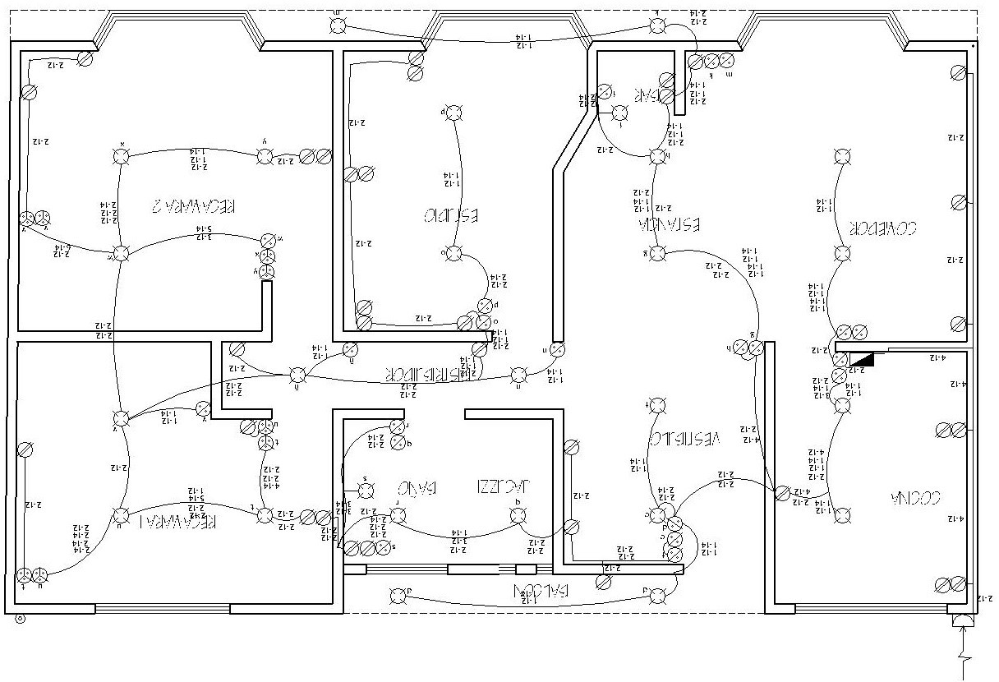
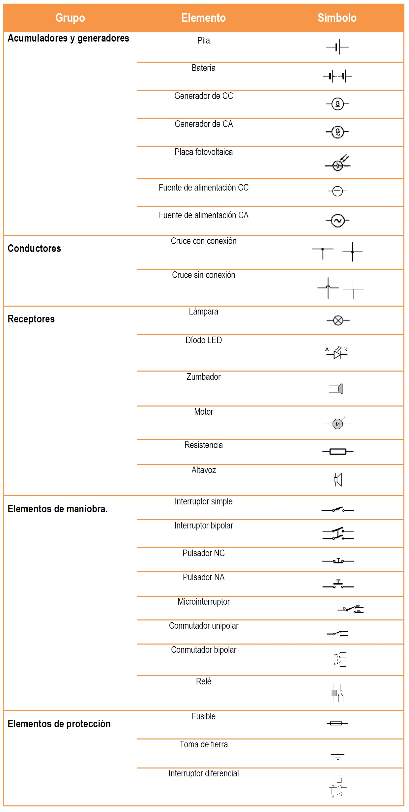

Componentes de un plano electrico
Un plano electrico es una representación gráfica de una instalación eléctrica o de parte de ella, en la que queda perfectamente definido cada uno de los componentes de la instalación y la interconexión entre ellos.

Cuando se quiere representar un circuito eléctrico, se hace mediante un esquema. Un esquema es un dibujo simplificado en el que los distintos elementos del circuito se representan mediante símbolos normalizados. Los símbolos normalizados son dibujos simples ya consensuados y regulados mediante normas específicas. No necesariamente se parecen al elemento que representan. El esquema que se realice empleando símbolos normalizados puede ser interpretado por personas de cualquier país.
Simbolos usados en un plano electrico.
